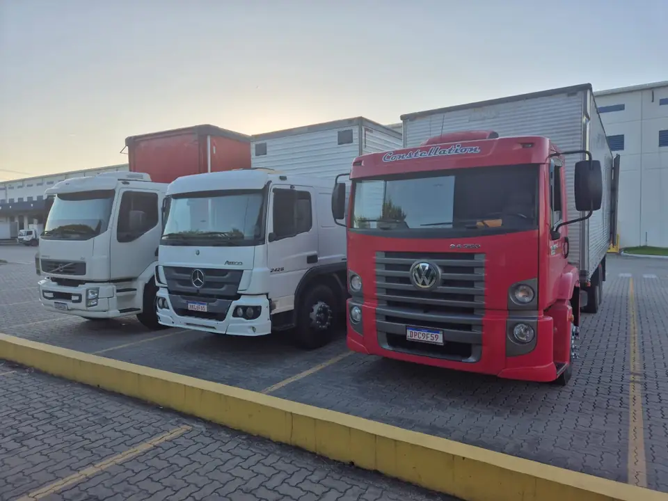

Entrega no centro expandido de São Paulo com VUC
Caminhão comum tem horário restrito na Zona de Máxima Restrição de Circulação. Os dois VUCs da ZUPO entregam em lojas, condomínios e centros de distribuição dentro dessa área.
O que é a ZMRC
A Zona de Máxima Restrição de Circulação é a área do centro expandido de São Paulo onde a Prefeitura limita a entrada de caminhões durante o dia. Os horários e as vias de cada regra são definidos pela CET.
O VUC, veículo urbano de carga, é um caminhão pequeno com dimensões limitadas pela regulamentação municipal. Por isso ele pode circular em boa parte da zona em horários em que um toco ou um truck não pode.
Para quem serve
- Lojas de rua e de shopping que recebem mercadoria durante o dia
- Condomínios residenciais e comerciais
- Centros de distribuição e escritórios no centro expandido
Como a ZUPO faz
A carga sai de Cotia pela Raposo Tavares em um dos dois VUCs baú da frota, com até 3 t. Pedido confirmado até as 11h é entregue no mesmo dia. Na entrega, o motorista fotografa o canhoto assinado e manda no seu WhatsApp.
Perguntas frequentes
VUC pode circular em toda a ZMRC?
O VUC tem regras mais flexíveis que os caminhões maiores, mas algumas vias e horários têm restrições próprias definidas pela CET. A ZUPO planeja a rota de cada entrega de acordo com essas regras.
Qual a capacidade do VUC?
Os VUCs baú da ZUPO levam até 3 t por viagem.
Dá para entregar no mesmo dia no centro de São Paulo?
Sim, para pedidos confirmados até as 11h.